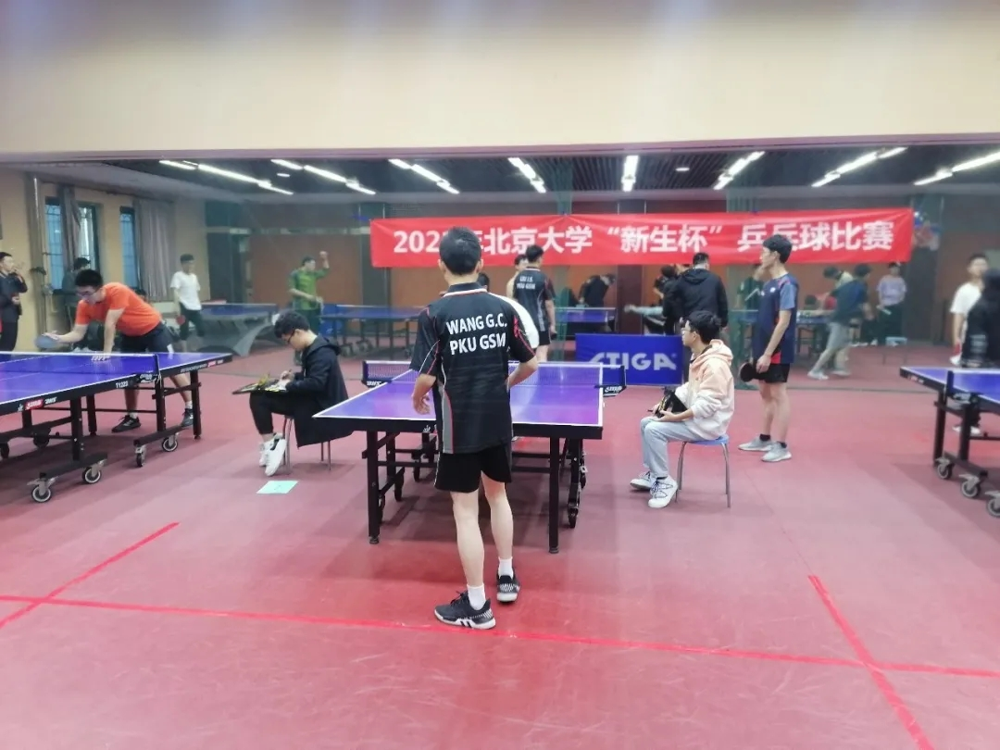
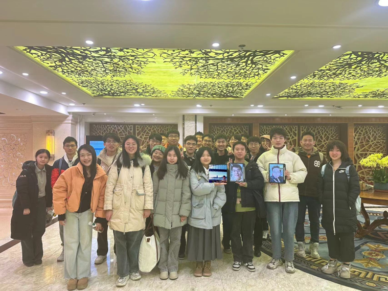
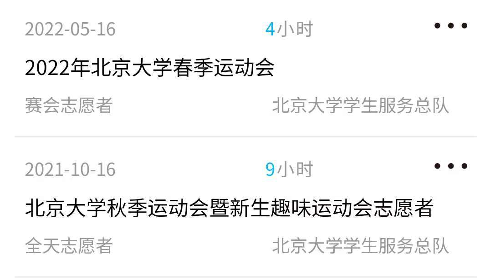
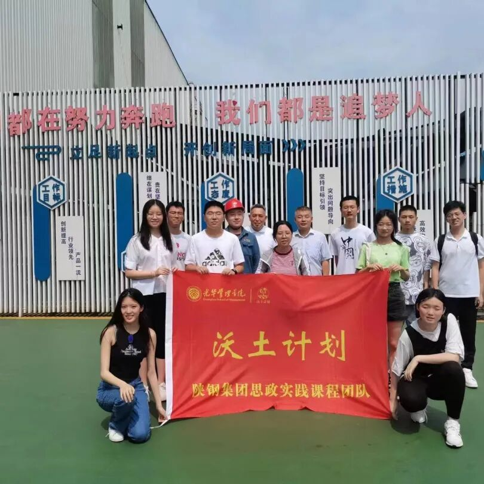
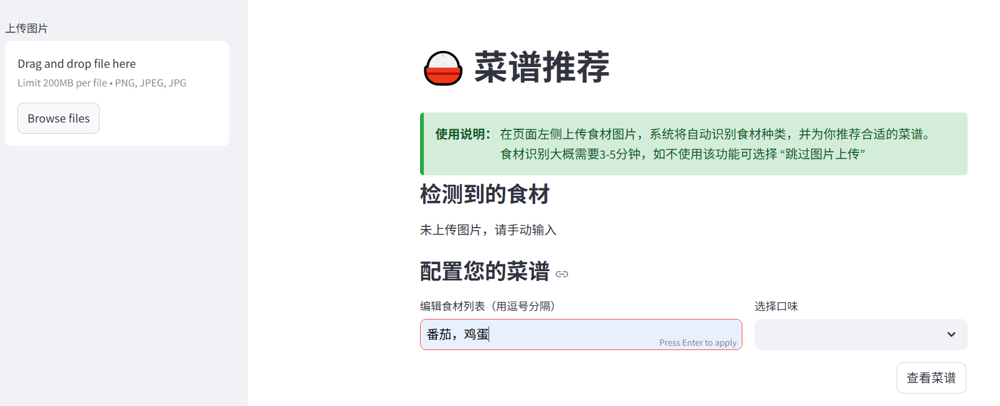
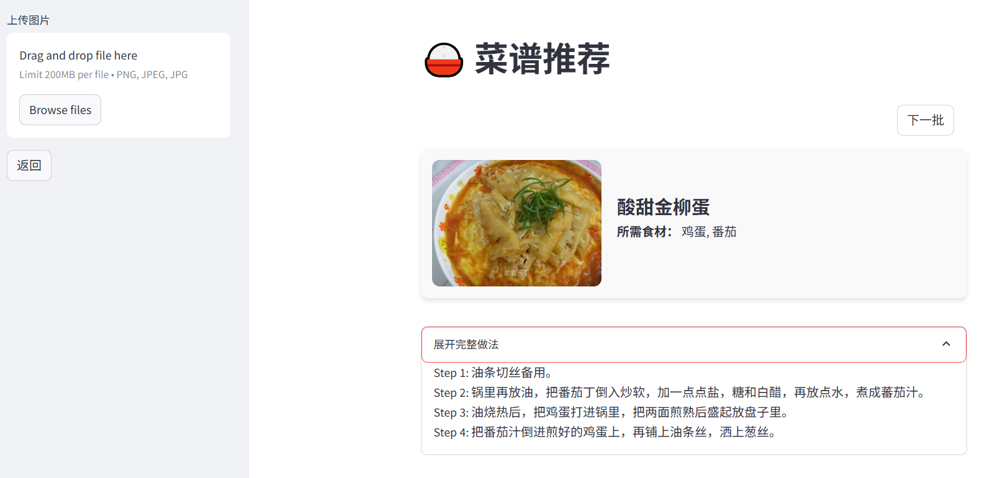
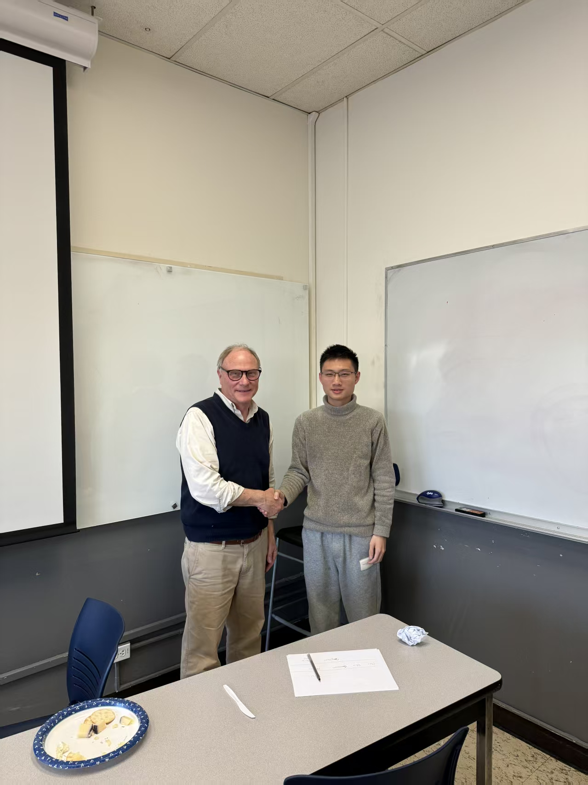
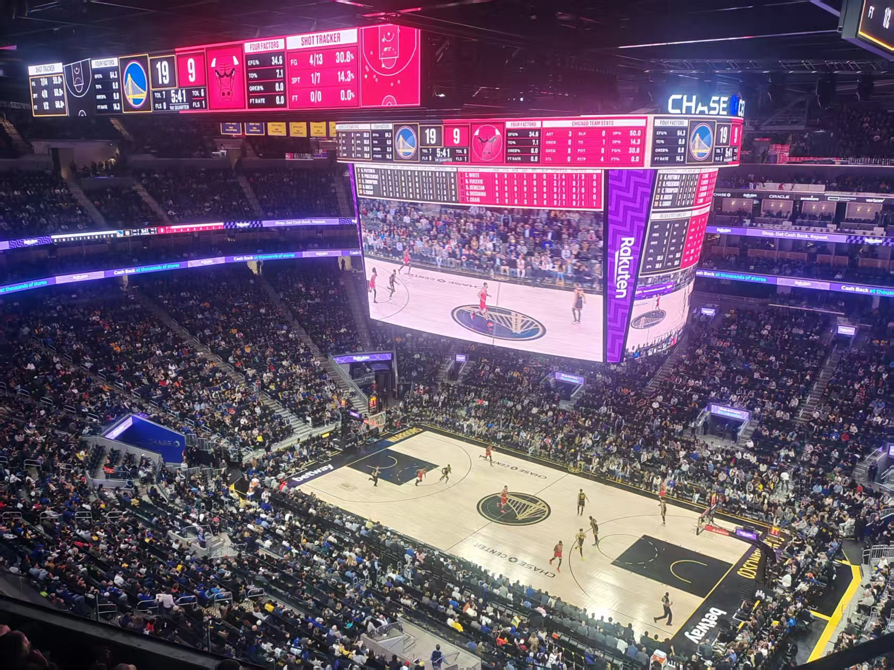

My Life at PKU
I enjoy playing table tennis and was a member of my school’s table tennis team. Although I stopped at the second round of the Freshman Cup at PKU, I truly enjoyed the training and competition.
I am also passionate about debating and joined the school debating team. Through debating, I met many like-minded friends and expanded my perspectives. I am grateful for the guidance of seniors during my freshman year.
Grateful for the support I received, I have volunteered in various university events:
- University sports meeting – helping organize events and transport messages. 
- Freshman welcome events – interacting with students from Singapore, Malaysia, Australia, and the USA. For example, I participated in the 2024 SCCEI Summer Camp, arranging venues and introducing school culture.

I also participated in the “Fertile Soil Project,” a social practice program organized by our school. During this project, we visited a major state-owned enterprise to learn about its business operations. Over the course of a week of field visits and interviews, we gained valuable insights into the company’s management and development, and ultimately produced a comprehensive report on its growth.
Besides sports and volunteering, I enjoy developing practical projects using machine learning and web technologies. For instance, I created an app with my schoolmates that recommends Chinese cuisine based on available ingredients: Cuisine Today!
 This idea came from my exchange experience at UCB. Sometimes when facing random ingredients in the fridge, I didn’t know what to cook. This app helps you choose a Chinese dish and provides cooking steps.
My Life at UCB
Studying at UC Berkeley was an exciting experience. During my time there, I had the honor of meeting Nobel Prize winner David Card.
I made new friends with my kind neighbors, who invited my roommates and me to celebrate the Lunar New Year together. I even received a red packet from my landlord! I feel so lucky to have met such wonderful people.
Our project director invited us to watch an NBA game in Los Angeles — the Warriors versus the Bulls.
I got my driver’s license and enjoyed a memorable road trip along Highway 1 by the sea with my schoolmates.